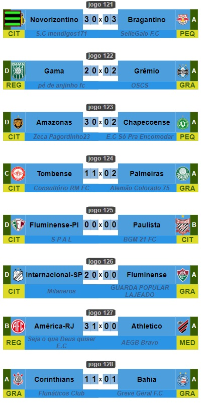

Campeonato de Cartola
A vitória no cartola é o sucesso do seu time!

Tendo assumido o clube ainda na quarta fase da competição, cartoleiro da "Milaneros" despachou o segundo desafiante a jogar com a vantagem de dois empates. O primeiro a ser superado foi o São Caetano, perdendo o primeiro confronto por 3x2, venceu o segundo confronto por dois a zero e assim subjultando o clube de São Caetano do Sul pelo critério do saldo de gols.
Na quinta fase, a Internacional de Limeira, como clube meramente "citadino" contra o "grande" Fluminense, azeitado por ninguém menos que o "Guarda Popular Lajeado", segundo maior técnico do universo dos clubes de cartola, voltou a fazer verdadeira epopéia.
Ao empatar a primeira partida por 0x0, time do "millaneros" estava obrigado a vencer no segundo confronto, e foi isso que conseguiu, ao superar o festejado Fluminense e seu prestigiado técnico pelo placar de 2 x 0. Com o resultado, clube do "Milaneros" vai às oitavas enfrentar o Vitória da Bahia, do "FC RPTRIUNFO", onde jogará, mais uma vez, sem poder contar com os empates. 
Na imagem acima, o resultado dos confrontos da quinta fase, com destaque para os dois empates em 0x0 entre Fluminense-PI e Paulista, na qual o Paulista passou à frente pelo critério de participar de divisão mais importante, Série "B" contra o não divisionado Fluminense do Piauí.